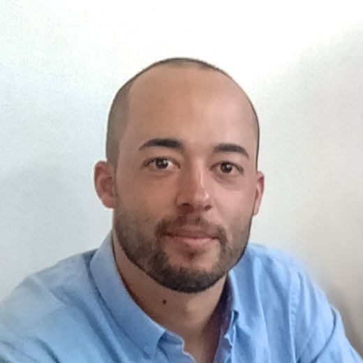

I am a computer scientist at the University of Aveiro with leading research interests in computational biology, bioinformatics, and data compression. I worked in the private sector for a couple of years. In 2009, I joined the University of Aveiro and completed the Ph.D. and PostDoc in Informatics (2016) and Computer Science (2019), respectively. In 2019, I worked at the University of Helsinki (Department of Virology) as a Bioinformatician. Since late 2019, I am mostly a Researcher at IEETA/DETI at the University of Aveiro. My memberships include the Portuguese Association for Pattern Recognition, the Super Dimension Fortress, and the European Society for Clinical Virology.